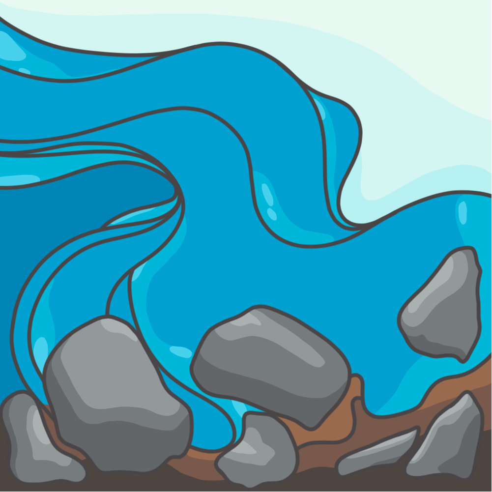

Click below for my home page.
I have a complex dissociative disorder (CDD) which affects my functional memory. I am disabled on multiple axes as I also have a chronic illness.
I don't like itemizing myself like this, but it can be helpful to present a list of shared experiences rather than to write a bibliography; Additionally, please do not consider this a list of my diagnoses. I will always validate educated self-diagnosis. And finally, I only share to advertise the sorts of experiences I can relate to. Your diagnostic status does not matter to me, but your experiences will always be heard.
Please tell me if I've done something to upset you. I'm trying to be a better person but I can't do that if I have no idea there is an issue.
My given name is not River.
I chose the name River for myself not only for the obvious geoscience connection, but because I am extremely passionate about the interconnectedness of our Earth systems.
A river is a flux point between systems, but it is also a system itself. We are a system of our thoughts and desires, and we are also a part of a larger system of thoughts and desires — those from our fields, family, peers, enemies, masters, servants, etc.
If you saw "radfemme" in relation to me, I'd like to clarify on what that means. I am transgender and I transitioned from female to male starting in 2014. I no longer identify with the "male" label and have been on some form of detransitioning journey for the past three years-ish. I was on testosterone for seven years before that, and I got top surgery about a year after coming out to my parents.
Although I no longer identify with that label, I can't confirm what label I identify with. I no longer feel as though the "male" label serves me since my rejection of my female identity was in response to a trauma I had experienced. Whereas trauma is a major part of my identity, I don't want it to be the way that I am percieved, down to my gender.
I am non-binary and radical acceptance has been my bedrock, the new way that I see myself beyond hitting "rock bottom".
I have a bachelors of science in Geology, with a minor in Environmental Science. I graduated from Rutgers-Newark with honors in 2021. Prior to that I graduated from Essex County
I Can Share my Sources.
I keep extensive lists of resources and research documents on several of these topics. If you would like to discuss my library, reach out to me on Discord. I'm not currently checking emails.
Keep in mind I keep this list dynamic. My content is current, albeit a work in progress.
All of the content on my pages was created by myself. Please respectfully admire my artwork from a distance, and do not save copies of my pieces locally to your personal folder unless we've already explicitly spoken beforehand.